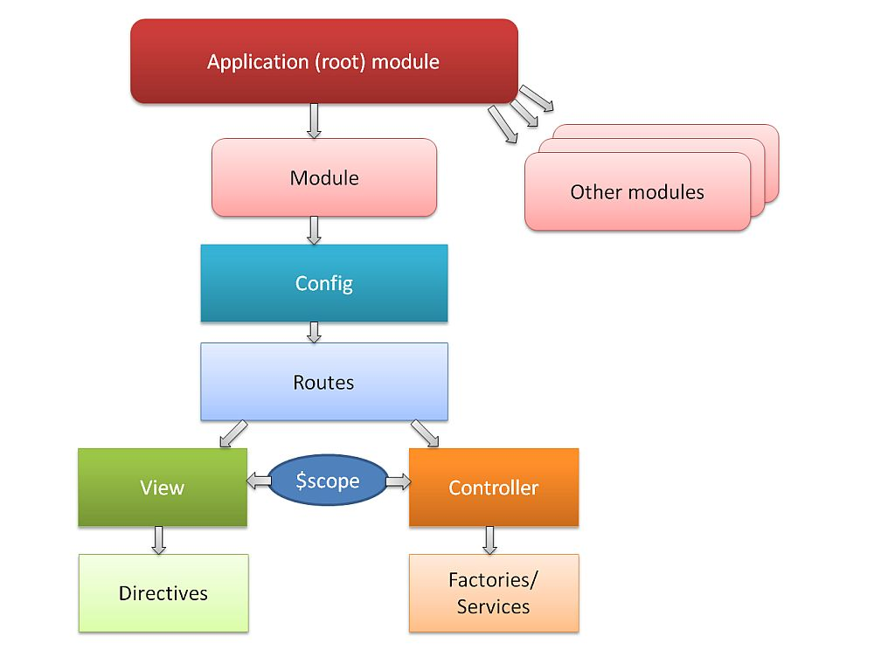
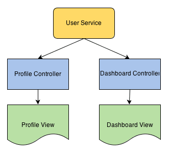

HTML enhanced for web apps!
What is AngularJS?
AngularJS是用來開發Web應用程式的框架，它能讓HTML成為描述你的應用程式的模板語言，並且可以和資料來源綁定，讓Web應用程式開發更容易。
AngularJS STRUCTURE
What are Factories / services?
使用在和contoller share data.
What are Controllers?
檢視從 Factories/ Services的資料, 並且存放著, 提供給不同的views 使用.
制定一些view 的事件
知道如何處理自定義的邏輯
What are Views?
Views 包含了html.
$scpoe 是controller 跟 view 的"黏著劑"
綁定controller 提供的資料經由透過$scpoe 物件.
What are Routes?
每一個route 都有個特別的path.
它參考 contoller 和 view.
它包含了 route參數. (例如: /myapp/#somepage)

start Some simple code.
還記得這張圖嗎?
Oh, ok....
開始編輯 app.js
var demoApp = angular.module('demoApp', ['ngRoute']);
demoApp.config(function ($routeProvider) {
$routeProvider
.when('/customers',
{
controller: 'terryController',
templateUrl: './app/template/customers.html'
})
.when(...)
.otherwise({ redirectTo: '/customers' });
});
demoApp.factory('terryCustomersService', function () {
var customers = [
...
];
return {
all: function () {
return customers;
}
}
});
demoApp.controller('terryController', function ($scope, terryCustomersService) {
$scope.customers = terryCustomersService.all();
});
my customers:
- {{person.name}}